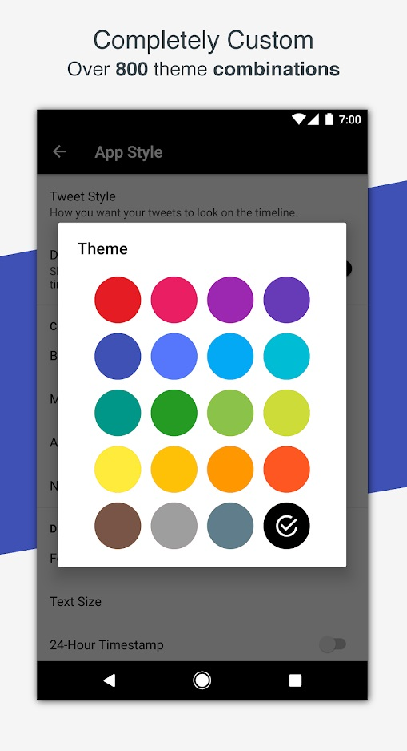
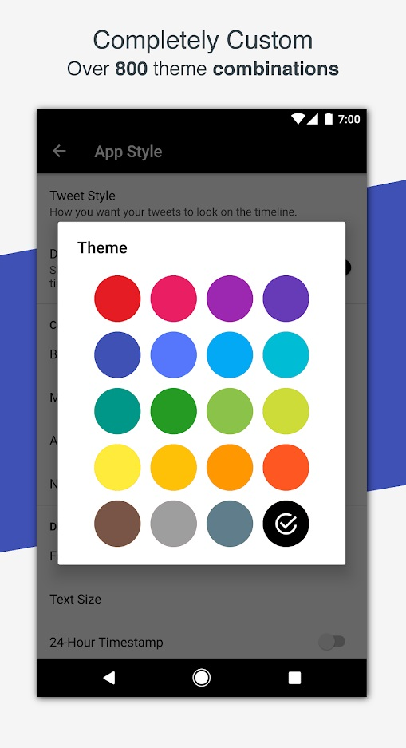

Article-0001
Powerfully Quick and Integrated

• Advanced - and unique - tweet filtering on profiles, so you can choose what type of tweets you want to see, from that user!
• Android Wear app to view, like, retweet, and reply to new tweets on your timeline, without having to take out your phone.
• Widgets to view the home timeline, mentions, and unread counts.
Powerfully Quick and Integrated

• Advanced - and unique - tweet filtering on profiles, so you can choose what type of tweets you want to see, from that user!
• Android Wear app to view, like, retweet, and reply to new tweets on your timeline, without having to take out your phone.
• Widgets to view the home timeline, mentions, and unread counts.